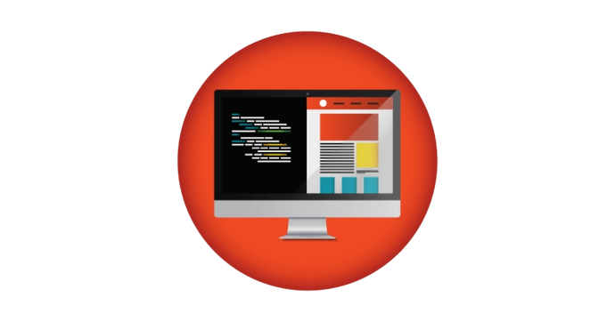
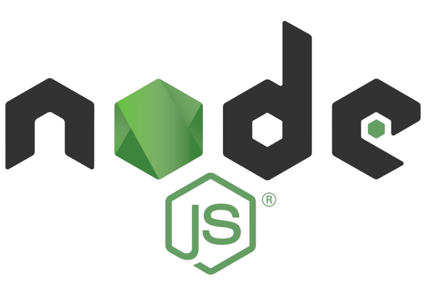
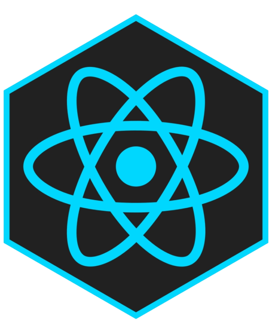
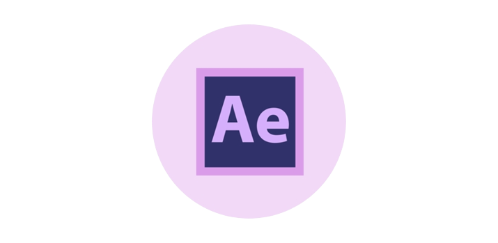

hello this is Tushar
I am a passionate
Work Experience

Web Developer
Web Developer with 1+ years of experience managing multiple
website and web application design projects.
Adept at developing creative and functional designs, web page
layouts, color schemes, and infrastructure to maintain a
cohesive website consistent with clients' needs.

Node.js Developer
Integration of user-facing elements developed by front-end
developers with server side logic.
Implementation of security and data protection.
Design and implementation of data storage solutions.

React Developer
1+ years experienced React Developer with hands-on experience in
identifying web-based user interactions along with designing &
implementing highly-responsive user interface components by
deploying React concepts.

Video Editor
Edited 130+ videos for clients like Drona, Lead Mines Midea,Ayugrid.
Sorted and edited 5+ hours of
raw footage into 10 minutes of finished video per week with 95%
positive client feedback.
Graphic Designer
Collaborated with Marketing, PR, and Social Media teams
to design graphics, boosting social engagement by 32% .
Used HTML and CSS to create a mock, highlighting custom
graphics for a product that launched to 500+ hospitals